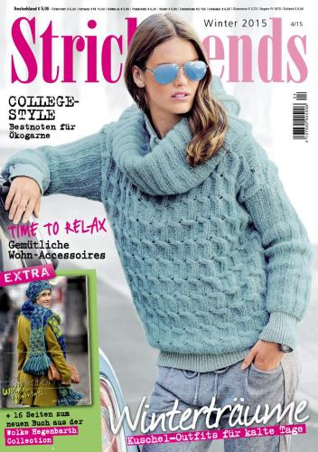

Как научиться вязать
В 21-м веке увлечение вязанием стало модным, стильным и прибыльным делом. По вязанию постоянно выходят новые издания журналов которые выпускают в Англии, Германии и даже Испании. Помимо вязания одежды, можно вязать аксессуары для дома, пледы, салфетки, игрушки, подарки, и даже украшения в виде серег и ожерелья. 
Вязание на спицах – это искусство и ваши возможности для создания уникальных вещей безграничны. Для того чтобы правильно и быстро научиться вязать на спицах, нужно правильно подобрать номера спиц для конкретной вещи. Существуют несколько видов спиц: вспомогательные, обычные, круговые и др. У каждого вида есть свои преимущества.
Вторым этапом идет покупка нитей, нам подойдут и натуральные и синтетические. Для первых опытов выбирайте нити потолще из шерсти или ангорки.
Совет! Начинайте вязать с небольших плоских предметов по типу салфеток, т.к. такие большие изделия как свитеры, вяжутся из отдельных деталей.
Начинаем с вязания цепочки воздушных петель. Важно рассчитать количество петель начальной цепочки. Лучше всего посмотреть видео как начать вязать петли. Выполните чертеж деталей изделия в нужную величину, чтобы в процессе работы можно было запомнить и проконтролировать количество нужных петель. Петли набираются на сложенные вместе спицы, чтобы они легко растягивались и можно было привязать следующий ряд.
Далее прочитайте статьи по набору начального ряда петель и строение трикотажного полотна.